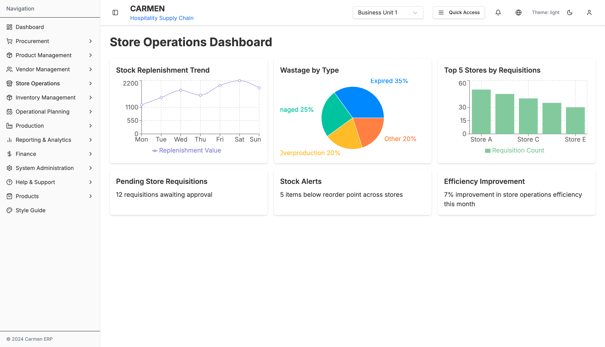
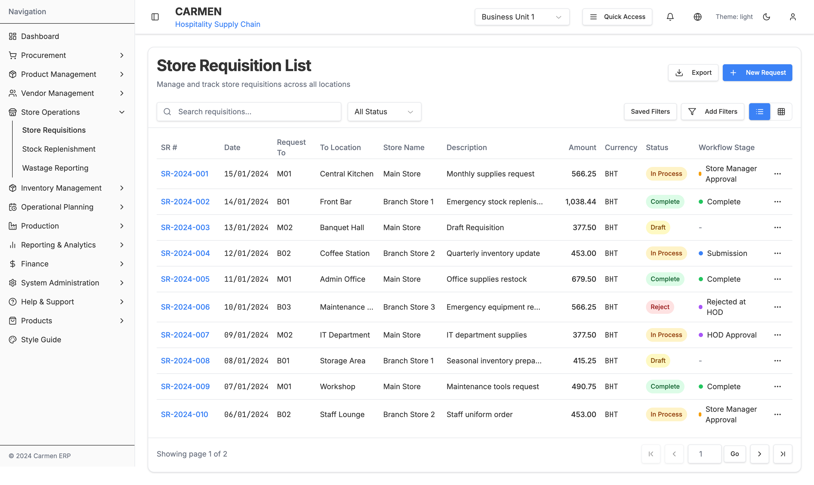
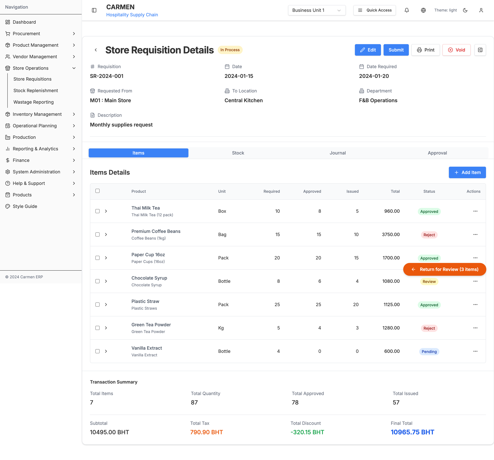
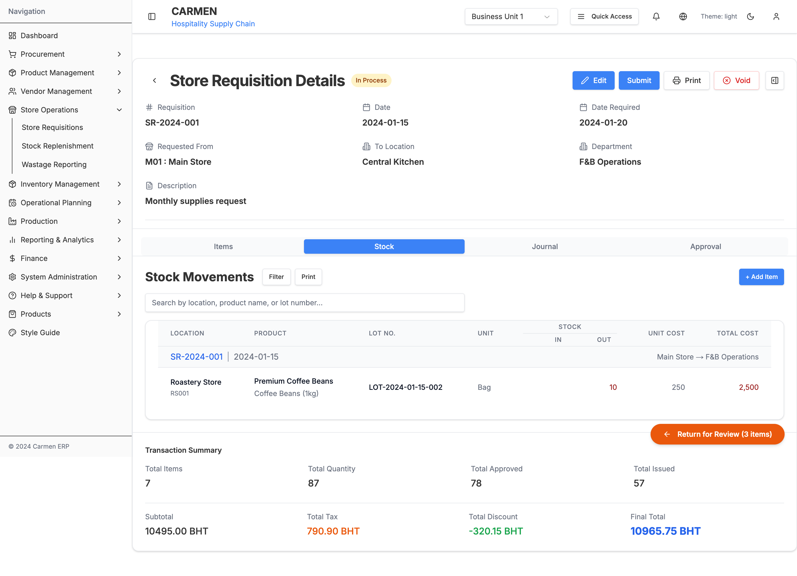
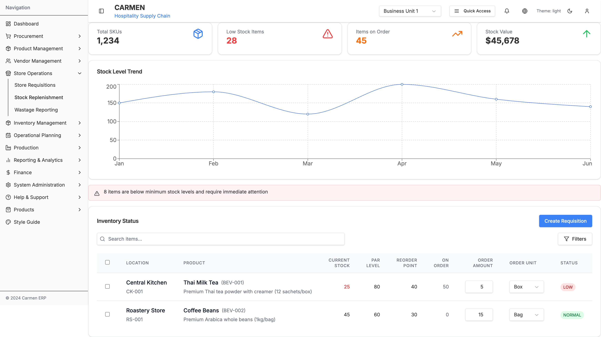
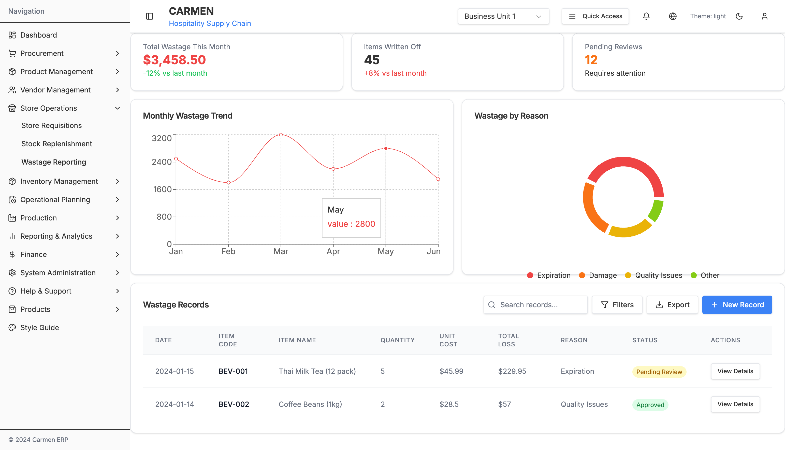

Store Operations Module - Complete Specification
Module Overview
The Store Operations module is a comprehensive inventory and requisition management system designed for hospitality operations. It manages store-to-store requisitions, stock replenishment tracking, and wastage reporting through an integrated interface.
Primary Functions:
- Store requisition lifecycle management
- Stock replenishment monitoring and alerts
- Wastage tracking and reporting
- Drag-and-drop dashboard customization
- Multi-level approval workflows
Architecture Overview
app/(main)/store-operations/
├── page.tsx # Dashboard with draggable widgets
├── components/
│ ├── store-requisition-list.tsx # Main requisitions list component
│ ├── store-replenishment.tsx # Stock replenishment dashboard
│ └── wastage-reporting.tsx # Wastage analytics component
├── store-requisitions/
│ └── components/
│ └── store-requisition-detail.tsx # Detailed requisition management (1950 lines)
├── stock-replenishment/
│ └── page.tsx # Stock replenishment page wrapper
└── wastage-reporting/
└── page.tsx # Wastage reporting page wrapper
1. Store Operations Dashboard

File: app/(main)/store-operations/page.tsx
Features
- Draggable Widget System: 6 customizable dashboard widgets using React Beautiful DnD
- Interactive Charts: Recharts integration for data visualization
- Real-time Statistics: Key performance indicators for store operations
Widgets Available
1. Stock Replenishment Trend
- Type: Line Chart (Recharts)
- Data: Monthly stock level trends
- Interactions: Hover tooltips, trend analysis
2. Wastage by Type
- Type: Bar Chart (Recharts)
- Categories: Food, Beverages, Supplies, Equipment
- Color Coding: Category-specific color scheme
3. Top 5 Stores by Requisitions
- Type: Horizontal Bar Chart
- Metrics: Requisition count, value totals
- Sorting: Descending by requisition count
4. Pending Approvals Count
- Type: Metric Card
- Data: Real-time approval queue count
- Alert: Red indicator for overdue approvals
5. Low Stock Alerts
- Type: Alert List
- Threshold: Below reorder point
- Actions: Quick requisition creation
6. Recent Activity Feed
- Type: Timeline List
- Events: Requisitions, approvals, stock movements
- Real-time: Auto-refresh capability
Drag and Drop Implementation
// Widget dragging using React Beautiful DnD
const onDragEnd = (result: DropResult) => {
if (!result.destination) return;
const newItems = Array.from(items);
const [reorderedItem] = newItems.splice(result.source.index, 1);
newItems.splice(result.destination.index, 0, reorderedItem);
setItems(newItems);
};
2. Store Requisitions List

File: app/(main)/store-operations/components/store-requisition-list.tsx
Primary Features
View Toggle System
- Table View: Comprehensive data grid with sorting
- Card View: Visual card layout for mobile-friendly browsing
- Toggle Control: Seamless switching between views
Advanced Filter System
- Filter Builder: Dynamic filter construction
- Pre-built Filters: Quick access to common filter combinations
- Date Range Picker: Custom date range selection
- Status Filters: Multi-select status filtering
- Location Filters: Store and department filtering
Data Table Features
- Column Sorting: All columns sortable (ascending/descending)
- Multi-select: Checkbox selection for bulk operations
- Row Actions: Context menu for individual items
- Pagination: Server-side pagination with page size selection
- Go-to-page: Direct page navigation input
Search Functionality
- Global Search: Searches across all visible columns
- Real-time: Debounced search with instant results
- Highlight: Search term highlighting in results
Data Structure
interface Requisition {
date: string
refNo: string // Unique reference number
requestTo: string // Target location/department
toLocation: string // Physical location
storeName: string // Requesting store name
description: string // Requisition description
status: 'In Process' | 'Complete' | 'Reject' | 'Void' | 'Draft'
workflowStage?: string // Current workflow stage
totalAmount: number // Total monetary value
currency: string // Currency code (USD, etc.)
}
Status Badge System
- In Process: Blue badge with processing icon
- Complete: Green badge with checkmark
- Reject: Red badge with X icon
- Void: Gray badge with void indicator
- Draft: Orange badge with draft icon
Bulk Actions Available
- Bulk Approve: Approve multiple requisitions
- Bulk Reject: Reject multiple with reason
- Export Selected: Export to CSV/Excel
- Print Selected: Print requisition documents
- Bulk Status Update: Change status for multiple items
3. Store Requisition Detail


File: app/(main)/store-operations/store-requisitions/components/store-requisition-detail.tsx
Size: 1,950 lines - Most complex component in the module
Tab Navigation System
Tab 1: Items Management
Primary Focus: Individual item management within requisitions
Item Data Table
- Columns: Description, Unit, Required Qty, Approved Qty, Issued Qty, Cost, Total, Tax, Discount
- Inline Editing: Direct cell editing for quantity adjustments
- Approval Controls: Individual item approval/rejection
- Status Tracking: Per-item approval status (Pending, Approved, Reject, Review)
Item Detail Modal
Triggered by: Edit button on any item row
Fields Available:
- Product Information (Name, SKU, Description)
- Quantity Management (Required, Approved, Issued)
- Pricing (Unit Cost, Tax Rate, Discount Rate)
- Approval Status and Comments
- Inventory Details (Current Stock, Location)
Bulk Item Operations
- Bulk Approve: Approve all selected items
- Bulk Reject: Reject with bulk reason
- Quantity Adjustments: Bulk quantity changes
- Price Updates: Bulk pricing modifications
Tab 2: Stock Movements
Primary Focus: Inventory transaction tracking
Movement Records Table
- Columns: Date, Type, Item, Quantity, From Location, To Location, Lot Number, Expiry
- Movement Types: Issue, Receipt, Transfer, Adjustment, Return
- Lot Tracking: Full lot number traceability
- Expiry Management: Date tracking for perishables
Movement History
- Chronological: Time-ordered movement log
- Filtering: By date range, movement type, item
- Export: Movement history export capability
Tab 3: Journal Entries
Primary Focus: Financial transaction recording
Journal Entry List
- Columns: Date, Account, Description, Debit, Credit, Reference
- Auto-generation: Automatic entry creation from approvals
- Manual Entries: Ability to add manual journal entries
- Validation: Account balance validation
Tab 4: Approval Workflow
Primary Focus: Multi-stage approval management
Workflow Status Display
- Stage Indicators: Visual workflow progress
- Approver Queue: Current and pending approvers
- History: Complete approval history log
- Escalation: Automatic escalation for overdue approvals
Approval Actions
- Approve: Full requisition approval
- Reject: Rejection with mandatory reason
- Request Changes: Send back for modifications
- Delegate: Delegate approval to another user
- Add Comments: Approval comments and notes
Activity Sidebar
Comments Section
- Threaded Comments: Reply capability
- User Attribution: Commenter identification and timestamp
- Rich Text: Basic formatting support
- Notifications: Comment notification system
Attachments Section
- File Upload: Drag-and-drop file upload
- File Types: Documents, images, spreadsheets
- File Preview: In-browser file preview
- Version Control: File version management
Activity Log
- Event Tracking: All requisition activities logged
- User Actions: Who, what, when for all changes
- System Events: Automatic system-generated events
- Export: Activity log export capability
Toggle Controls
- Show/Hide Sidebar: Collapsible sidebar for screen space
- Section Toggles: Individual section show/hide
- Persistent Settings: User preference storage
Complex Data Structures
interface RequisitionItem {
id: number
description: string
unit: string
qtyRequired: number
qtyApproved: number
qtyIssued: number
costPerUnit: number
total: number
taxRate: number
discountRate: number
approvalStatus: 'Pending' | 'Approved' | 'Reject' | 'Review'
inventory: InventoryInfo
itemInfo: ItemInfo
comments?: string[]
attachments?: AttachmentInfo[]
}
interface StockMovement {
id: number
date: string
type: 'Issue' | 'Receipt' | 'Transfer' | 'Adjustment' | 'Return'
itemId: number
quantity: number
fromLocation: string
toLocation: string
lotNumber?: string
expiryDate?: string
reference: string
userId: number
}
interface JournalEntry {
id: number
date: string
account: string
description: string
debitAmount: number
creditAmount: number
reference: string
requisitionId: number
userId: number
}
4. Stock Replenishment

File: app/(main)/store-operations/components/stock-replenishment.tsx
Dashboard Components
Statistics Cards
- Total SKUs: Overall product count (1,234)
- Low Stock Items: Items below reorder point (28 - Red alert)
- Items on Order: Currently ordered items (45 - Orange indicator)
- Stock Value: Total inventory value ($45,678 - Green trending up)
Stock Level Trend Chart
- Type: Responsive Line Chart (Recharts)
- Data Period: 6-month rolling trend
- Interactions: Hover tooltips, zoom capability
- Y-axis: Stock level quantities
- X-axis: Monthly periods (Jan-Jun)
Low Stock Alert Banner
- Alert Type: Warning banner with red styling
- Message: "8 items are below minimum stock levels and require immediate attention"
- Icon: Alert Triangle (Lucide React)
- Action: Click to filter low stock items
Inventory Status Table
Table Structure
| Column | Type | Description | Actions |
|---|---|---|---|
| Select | Checkbox | Multi-select for bulk operations | Select all/individual |
| Location | Text + Code | Store location with code | Sortable |
| Product | Text + SKU | Product name, SKU, description | Searchable |
| Current Stock | Number | Current quantity on hand | Color-coded alerts |
| PAR Level | Number | Periodic Automatic Replenishment level | Editable |
| Reorder Point | Number | Minimum stock trigger point | Editable |
| On Order | Number | Quantity currently on order | Read-only |
| Order Amount | Number Input | Suggested/manual order quantity | Editable |
| Order Unit | Dropdown | Unit of measure selection | Selectable |
| Status | Badge | Stock status indicator | Visual |
Advanced Features
Smart Reorder Calculations
const suggestedOrder = Math.max(0, item.parLevel - (item.currentStock + item.onOrder));
Status Color Coding
- LOW: Red background, white text - Below reorder point
- NORMAL: Green background, white text - Above reorder point
- HIGH: Blue background, white text - Above PAR level
Unit Selection Options
- Box, Bag, Pack, Piece, Kg (Dropdown selection)
- Dynamic unit conversion capability
- Vendor-specific unit preferences
Search and Filter System
- Global Search: Product name, SKU, location search
- Advanced Filters: Status, location, stock level ranges
- Quick Filters: Low stock, on order, specific locations
Bulk Operations
- Create Requisition: Generate requisition from selected items
- Bulk Order Amount: Set order amounts for multiple items
- Export: Export selection to CSV/Excel
- Print: Print stock status report
5. Wastage Reporting

File: app/(main)/store-operations/wastage-reporting/page.tsx
Statistics Dashboard
Key Metrics Cards
- Total Wastage: Monthly wastage value ($2,450)
- Items Written Off: Count of written-off items (23 items)
- Pending Reviews: Items awaiting review (5 pending)
Monthly Wastage Trend
- Chart Type: Area Chart (Recharts)
- Time Period: 12-month rolling view
- Data Points: Monthly wastage values
- Trend Analysis: Month-over-month comparison
Wastage Records Management
Records Table Structure
| Column | Data Type | Description | Actions |
|---|---|---|---|
| Date | Date | Wastage occurrence date | Sortable |
| Location | Text | Store/department location | Filterable |
| Item | Text + SKU | Product details | Searchable |
| Quantity | Number | Waste quantity | Numeric input |
| Unit | Text | Unit of measure | Dropdown |
| Reason | Text | Wastage reason/category | Categorized |
| Cost | Currency | Financial impact | Calculated |
| Status | Badge | Review status | Workflow |
| Actions | Buttons | Record management | CRUD operations |
Wastage Categories
- Expiry: Items past expiration date
- Damage: Physical damage during handling/storage
- Spoilage: Natural spoilage/deterioration
- Contamination: Cross-contamination incidents
- Over-preparation: Excess food preparation
- Quality Issues: Below quality standards
- Other: Miscellaneous reasons
Advanced Analytics
- Cost Analysis: Wastage cost breakdown by category
- Trend Analysis: Seasonal and monthly patterns
- Location Comparison: Store-by-store wastage comparison
- Item Analysis: Most wasted items identification
- Root Cause: Recurring wastage pattern analysis
Shared Components and Utilities
1. Advanced Filter Builder
interface FilterRule {
field: string
operator: 'equals' | 'contains' | 'greater_than' | 'less_than' | 'between'
value: string | number | Date
condition: 'and' | 'or'
}
Features:
- Dynamic filter rule construction
- Multiple condition support (AND/OR logic)
- Field-specific operators
- Saved filter profiles
- Quick filter templates
2. Status Badge Component
interface StatusBadgeProps {
status: string
variant: 'success' | 'warning' | 'error' | 'info' | 'neutral'
icon?: boolean
size?: 'sm' | 'md' | 'lg'
}
Variants:
- Success: Green background, checkmark icon
- Warning: Orange background, warning icon
- Error: Red background, X icon
- Info: Blue background, info icon
- Neutral: Gray background, no icon
3. Pagination Component
interface PaginationProps {
currentPage: number
totalPages: number
pageSize: number
totalItems: number
onPageChange: (page: number) => void
onPageSizeChange: (size: number) => void
}
Features:
- First/Previous/Next/Last navigation
- Direct page input (go-to-page)
- Page size selection (10, 25, 50, 100)
- Total count display
- Responsive design
4. Modal Dialog System
Types Available:
- Edit Item Modal: Full item editing interface
- Confirmation Dialog: Action confirmation with details
- Advanced Filter Modal: Complex filter construction
- Upload Modal: File upload interface
- Comment Modal: Comment creation/editing
Common Features:
- Backdrop click to close (configurable)
- Escape key handling
- Focus management
- Size variants (sm, md, lg, xl, full)
- Scrollable content areas
Data Flow and State Management
1. Requisition Lifecycle
2. Stock Replenishment Flow
3. Wastage Reporting Workflow
API Integration Points
1. Data Fetching Patterns
// Requisition data fetching with filtering
const fetchRequisitions = async (filters: FilterOptions) => {
const params = new URLSearchParams({
page: filters.page.toString(),
pageSize: filters.pageSize.toString(),
status: filters.status,
dateRange: JSON.stringify(filters.dateRange),
searchTerm: filters.searchTerm
});
const response = await fetch(`/api/requisitions?${params}`);
return response.json();
};
// Real-time stock level monitoring
const useStockLevels = () => {
const [stockData, setStockData] = useState([]);
useEffect(() => {
const interval = setInterval(async () => {
const data = await fetch('/api/stock-levels').then(r => r.json());
setStockData(data);
}, 30000); // Update every 30 seconds
return () => clearInterval(interval);
}, []);
return stockData;
};
2. State Management Patterns
// Zustand store for requisition management
interface RequisitionStore {
requisitions: Requisition[]
filters: FilterOptions
selectedItems: string[]
loading: boolean
setRequisitions: (requisitions: Requisition[]) => void
updateFilters: (filters: Partial<FilterOptions>) => void
toggleItemSelection: (id: string) => void
clearSelection: () => void
}
// React Query for server state
const useRequisitionDetail = (id: string) => {
return useQuery({
queryKey: ['requisition', id],
queryFn: () => fetchRequisitionDetail(id),
staleTime: 5 * 60 * 1000, // 5 minutes
refetchOnWindowFocus: false,
});
};
Performance Considerations
1. Code Splitting
// Lazy loading for heavy components
const StoreRequisitionDetail = lazy(() =>
import('./components/store-requisition-detail')
);
// Route-based code splitting
const StockReplenishment = lazy(() =>
import('./stock-replenishment/page')
);
2. Data Virtualization
- Large Tables: Virtual scrolling for 1000+ rows
- Infinite Scroll: Progressive data loading
- Pagination: Server-side pagination for performance
- Caching: Intelligent data caching strategies
3. Optimization Strategies
- Memoization: React.memo for expensive components
- Debouncing: Search input debouncing (300ms)
- Bundle Splitting: Route-based code splitting
- Image Optimization: Next.js Image component usage
Accessibility Features
1. Keyboard Navigation
- Tab Order: Logical tab sequence through all interactive elements
- Skip Links: Skip to main content functionality
- Focus Management: Visible focus indicators
- Shortcuts: Keyboard shortcuts for common actions
2. Screen Reader Support
- ARIA Labels: Comprehensive ARIA labeling
- Role Attributes: Proper semantic roles
- Live Regions: Dynamic content announcements
- Alt Text: Descriptive alternative text for images
3. Visual Accessibility
- Color Contrast: WCAG AA compliant contrast ratios
- Font Sizes: Scalable text with rem units
- Motion Preferences: Respects reduced motion preferences
- High Contrast: High contrast mode support
Testing Strategy
1. Unit Testing
// Component testing with Jest and React Testing Library
describe('StoreRequisitionList', () => {
it('should filter requisitions by status', async () => {
render(<StoreRequisitionList />);
const statusFilter = screen.getByRole('combobox', { name: /status/i });
fireEvent.change(statusFilter, { target: { value: 'approved' } });
await waitFor(() => {
expect(screen.getByText('Approved')).toBeInTheDocument();
});
});
});
2. Integration Testing
- API Integration: Mock API responses for consistent testing
- User Workflows: End-to-end user journey testing
- Data Flow: State management integration testing
3. Performance Testing
- Load Testing: Large dataset rendering performance
- Memory Testing: Memory leak detection
- Bundle Analysis: Bundle size optimization testing
Security Considerations
1. Data Protection
- Input Sanitization: XSS prevention through proper sanitization
- CSRF Protection: Cross-site request forgery protection
- Authentication: Role-based access control
- Authorization: Permission-based feature access
2. Data Validation
// Zod schema validation
const requisitionSchema = z.object({
description: z.string().min(1).max(500),
totalAmount: z.number().positive(),
status: z.enum(['draft', 'submitted', 'approved', 'rejected']),
items: z.array(requisitionItemSchema).min(1),
});
This specification provides comprehensive documentation of the Store Operations module, covering all UI elements, workflows, actions, and technical implementation details. The module represents a sophisticated inventory management system with complex approval workflows, real-time monitoring, and comprehensive reporting capabilities.